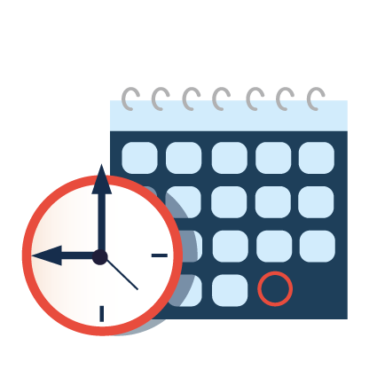

The time table is set in such a way that students can study different subjects without getting bored. For example, after a period of Science, students can study English for the next half hour. In this way, they don’t get bored of studying a particular subject. There is also a lunchtime or break where students can interact with each other and refuel themselves. A time table also includes games and PT periods in order to allow students to carry out physical activities along with mental activities. Furthermore, periods are also allotted for art, music, dance and other curricular activities that allow students to follow their passion. This reduces the wastage of time and promotes effective learning..
It prevents wastage of time and energy: The timetable shows exactly what is to be done at a
particular time. It, thus, directs the attention of both the pupil and the teacher to one thing at a
time. Thus one's energy is automatically directed in a particular direction and this prevents a
lot of wastage of time and energy. It also prevents confusion, duplication, overlapping and
unnecessary repetition on the part of the pupil and the teacher.
Here's my college time table